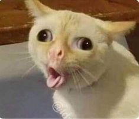

GATOS EN ADOPCION

Edad: 4 Años
Nombre: Eduard
Pelaje: Blanco amarillento
Gustos: Jugar y revolcarse por todos lados
Sobre Eduard: Un gato muy loco y muy bizarro. Le encanta ir de aqui para allá todo en todo momento, tambien jugar todo el día